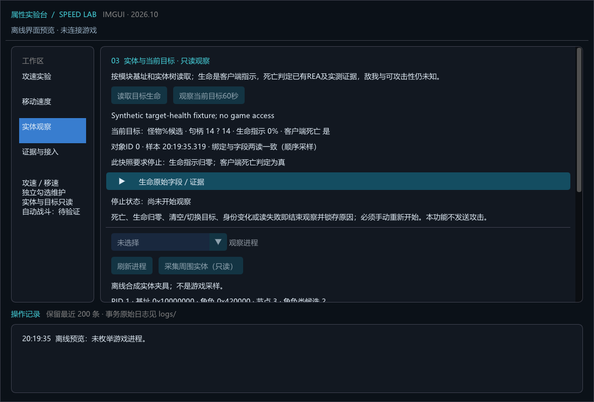

2026-10-21 · 当前版本 Game.dll · 仅只读采样
本轮63次REA→IDA只读查询成功，原始PE核对22项通过。已从最终请求向上追到命名命令、目标动作封装、动作状态写入与Player更新分派；执行线程和通用取消语义仍未得到证明。
151A90(Player,0,...) 会通过14BD40按当前目标选择动作；0不能当作取消。15CE80 部分分支会清空184字节动作块，但随后可恢复先前模式或写入1/9/10；它不是通用停止接口。C+1104。请求序号变化不能证明实际发包，更不能证明命中；其他写入者、重置和回绕未审完。| 位置 | 本轮证据含义 | 仍未知 |
|---|---|---|
| Game RVA D53948 | Player虚表+8指向1652A0 | 实际执行线程ID、重入与调度约束 |
| 玩家组件C+1690 / +1694 | 动作值及阶段；更新器读取后分派 | 完整枚举、所有写入者及正常按键关联 |
| C+16A0 / +16A4 / +16A8 | 部分动作转换/恢复分支使用 | 所有生命周期和彻底取消条件 |
| C+16AC / +1E90 / +1ED8 | 第五参数、攻击尝试计时及相关标志的原始值 | 完整业务语义、保护计时来源及上限 |
| 模块B+145EED0+104B8 | 以LEA取得全局传输对象后访问的待发字节字段 | 攻击特定队列、服务端受理与完成情况 |
以上代码地址为RVA，组件字段相对本次重新定位的C；只适用于固定SHA256版本。伪代码行地址可能落在参数准备指令，调用点以指令复核：1657B8是mov，真正call在1657BB。cattack字符串位于动画事件字符串匹配，未将其当作按键攻击入口。
启动新版。先正常关闭旧窗口，再启动新路径；原旧包保留。实体观察页展开“本地角色动作 / 攻击调用链观察”，当前目标60秒JSONL同时保存动作字段。字段两读变化或读取失败保留原始值与独立错误，不把附加字段未知覆盖为生命事实。
程序与夹具153项、真实ImGui渲染/交互10项通过，其中新增6项动作读取检查。实机只读基线当前目标为空，本地角色绑定一致，动作值0/阶段1/请求序号93/待发字节0；仅说明当次读值，不将93解释成93次命中或请求，也未完成新动作的游戏输入对照。
尚未接攻击执行器。下一步以正常输入对照动作值和序号，再核实线程、动作取消与后续恢复，完成后才能验证真正的自动攻击停手。
63份Evidence、原字节核对与未知 · 新版构建和检查 · 本地角色只读基线
找到两份完整的新版ImGui观察日志，两轮均在目标仍选中、身份一致时，因生命指示归零与客户端死亡判定为真而结束观察。最新一轮覆盖满血到死亡，补充了此前预检目标为空、未能开始观察之外的实机证据。
| 开始时间（北京时间） | 目标 | 对象ID | 生命指示序列 | 观察时长 | 证据 |
|---|---|---|---|---|---|
| 20:32:16 | 尖牙劍齒豹 | 2155165988 | 14 → 2 → 0 | 11.31秒 | 原始日志 |
| 20:35:00 | 尖牙劍齒豹 | 2155210627 | 100 → 87 → 74 → 59 → 46 → 33 → 20 → 9 → 0 | 33.76秒 | 原始日志 |
两轮结尾均有独立stop记录，原因为“生命指示归零；客户端死亡判定为真；观察停止”。这验证的是生产只读观察器的停止路径；自动攻击执行器尚未接入，因此不能称为实际攻击停手验证。具体死亡时刻、服务器结算和长期尸体保留仍未由这些日志证明。
逐轮身份、死亡及停止核对。已按SHA256保存原日志副本；没有修改正在运行的工具或游戏。
第一阶段已接入现有ImGui工具。“实体观察”页现在可以读取当前目标生命指示、客户端死亡判定及原始字段，并显式开始最长60秒的只读观察。

观察器单独持有目标身份，包括进程出生、模块基址、本地角色、目标句柄、对象ID、实体和组件。一次显式观察开始时核对模块文件SHA256，每轮检查进程/模块与对象绑定。每次采样关闭只读句柄，结束或关闭窗口时关闭日志。周围实体表仍为手动快照；当前目标观察有独立刷新。轮询和两次顺序读取不能提供原子或硬实时保证。
停止观察器没有连接攻击执行器。敌我、可攻击性、普通攻击线程/参数/队列及实际停手还待证据；当前版本不自动攻击、找怪或移动。
程序及夹具 147 项、ImGui渲染与开关交互 10 项通过；新增生命/停止检查24项。四组实测共1,481个样本通过生产C#停止锁存回放。
新版C#曾在本机当前进程读到满血尖牙劍齒豹（与旧尸体ID不同）。随后尝试有限观察时，目标已清空，工具正确拒绝启动。没有据此声称完成了新一轮实机击杀/执行器停手验证。性能记录仅覆盖拒绝启动的预检命令；完整分析CPU、峰值内存与模型token成本未测。
复用已保存REA Evidence，本轮新增REA请求0；新增7项原PE字节核对通过。1455F6向16D600传入当前对象参数；16D600有对象+1E90与攻击间隔的时间门槛。16D887以LEA把模块+145EED0的地址送入RCX，再调用7CFBF0。伪代码中的全局变量表达式不能替代机器指令的参数含义。返回1亦不能证明服务器受理或命中。
下一阶段先追上游动作构造与引擎调度、排队/取消及可攻击性，再接单目标执行器，验证真正的启动→攻击→死亡→停手；自动找怪、追击和连续升级随后开展。
尖牙劍齒豹在连续10秒、41次只读采样中均保持同一对象和选中状态，同时生命指示为0、客户端死亡判定为真。用户报告已由本人击杀且尸体没有消失。此次未采到它从存活变为死亡的过程。
| 字段 | 实测值 |
|---|---|
| 目标句柄 / 对象ID | 65529 / 2153973818 |
| 实体 E / 角色组件 C（本次进程） | 0x7BCCA800 / 0x71F46000 |
| 生命指示 C+40 / 数值 C+135C | 0 / 0 |
| 状态 C+2C8 / C+AFC / C+AF8 | 7 / 0xFFFFFFFF / 0 |
这支持在目标仍存在时依据已验证的客户端死亡判定停止，而非等待目标消失。地址仅描述本次对象，不能跨重启复用；不据此证明永久保留、任务物品或拾取权限。本次复用既有REA静态证据，新增Win32辅助只读采样；没有新REA查询、游戏写入、函数调用或自动攻击。
已补齐当前版本的客户端死亡判定与目标失效证据。这证明可以构建停止观察器，不等于已实现自动战斗，也不证明服务器死亡事件或精确生命值。
本轮新增 REA 查询 59 次；原始 PE 核对 24 项通过。三轮各120秒，只读采样；无游戏写入、自动输入或游戏函数调用。
图示是本次观察到的阶段，不承诺所有场景都按同一时序。采样间隔约250毫秒，不是精确游戏事件时钟。
ClientDead(C) = u32(C + 0x2C8) == 7
|| (u32(C + 0xAFC) == 18 && u32(C + 0xAF8) != 0)
UnitIsDead 名称/函数描述符位于 RVA B6AA00，函数 RVA 31F3D0。它与 RVA 9271C0 内的 ACT_STATE_DEAD 提示分支、RVA 144480 的部分动作资格排除使用同一判定。描述符原字节已核对；完整脚本接口注册遍历未审计。所有字段均相对经验证的角色组件 C，不是 Game.dll 基址直接加这些偏移。
读取链：当前模块基址 → 目标句柄与实体管理器 → 实体树对象 → E+380 组件 C；重新核对对象 ID、回链、虚表及目标前后值。没有目标时是“不可取得该判定”，不能返回“活着”。
| 观察 | 拟执行行为 | 可以声称什么 |
|---|---|---|
| 生命指示为0，死亡判定尚未真 | 暂停新攻击，等待后续状态；禁止自动恢复 | 生命归零候选；单个零值不独立证明死亡 |
| 已验证对象的 ClientDead 为真 | 结束当前攻击对象，锁存停止原因 | 客户端把对象视作死亡；不等于服务端日志认证 |
| 目标清空、切换或原对象不存在 | 停止；重新选择必须重新建立身份 | 原目标不再有效；不能推定击杀成功 |
| 句柄、名称相同但ID或绑定改变 | 拒绝继续使用旧对象，不随新对象复活 | 观察到句柄/存储复用；旧地址不能跨生命周期使用 |
| 读失败、过期、身份不一致、字段前后变化 | 停止并保留不完整事实 | 未知；不能把失败值填成0、满血或存活 |
停止应锁存：目标重新出现、读数恢复或又选中同名怪物，都不能自行恢复攻击。这是后续执行器的设计要求；本轮只读停止策略不发送攻击，未验证实际执行器能否及时停手。
下表仅在值或身份变化时列一行，完整采样保存于JSON。4294967295为原始无符号FFFFFFFF，语义未另行命名。原对象=false后的生命值属于复用句柄解析到的新对象，绝不能解释成旧怪物复活。
用户纠正为NPC击杀；确认倒地零血。目标栏清空是否自动，用户不能确定。
采样 480 次；同一对象死亡判定真 12 次；其中仍被选中 0 次。稳定性异常 0 次。
| 相对秒 | 选中句柄 | 对象ID | 原对象 | 生命指示 | 2C8 | AFC | AF8 | 客户端死亡 |
|---|---|---|---|---|---|---|---|---|
| 0.0 | 65488 | 2153761430 | True | 100 | 0 | 4294967295 | 0 | False |
| 42.359 | 65488 | 2153761430 | True | 91 | 1 | 1031 | 1 | False |
| 43.109 | 65488 | 2153761430 | True | 91 | 1 | 4294967295 | 0 | False |
| 44.609 | 65488 | 2153761430 | True | 76 | 1 | 4294967295 | 0 | False |
| 46.859 | 65488 | 2153761430 | True | 65 | 1 | 4294967295 | 0 | False |
| 47.109 | 65488 | 2153761430 | True | 65 | 1 | 17 | 1 | False |
| 48.359 | 65488 | 2153761430 | True | 65 | 1 | 4294967295 | 0 | False |
| 49.109 | 65488 | 2153761430 | True | 57 | 1 | 17 | 1 | False |
| 50.875 | 65488 | 2153761430 | True | 57 | 1 | 4294967295 | 0 | False |
| 51.375 | 65488 | 2153761430 | True | 24 | 1 | 17 | 1 | False |
| 53.125 | 65488 | 2153761430 | True | 24 | 1 | 4294967295 | 0 | False |
| 53.375 | 65488 | 2153761430 | True | 8 | 1 | 4294967295 | 0 | False |
| 53.625 | 0 | 2153761430 | True | 0 | 1 | 18 | 1 | True |
| 54.875 | 0 | 2153761430 | True | 0 | 7 | 4294967295 | 0 | True |
| 56.641 | 0 | None | False | None | None | None | None | None |
| 108.984 | 0 | 2147493400 | False | 100 | 0 | 4294967295 | 0 | None |
| 111.734 | 65485 | 2147493400 | False | 100 | 0 | 4294967295 | 0 | None |
用户确认由本人击杀、尸体仍选中，随后告知消失。
采样 480 次；同一对象死亡判定真 24 次；其中仍被选中 12 次。稳定性异常 0 次。
| 相对秒 | 选中句柄 | 对象ID | 原对象 | 生命指示 | 2C8 | AFC | AF8 | 客户端死亡 |
|---|---|---|---|---|---|---|---|---|
| 0.0 | 65485 | 2147579763 | True | 100 | 0 | 4294967295 | 0 | False |
| 34.578 | 65485 | 2147579763 | True | 88 | 1 | 1031 | 1 | False |
| 35.078 | 65485 | 2147579763 | True | 88 | 1 | 4294967295 | 0 | False |
| 36.828 | 65485 | 2147579763 | True | 73 | 1 | 4294967295 | 0 | False |
| 38.328 | 65485 | 2147579763 | True | 73 | 1 | 1024 | 1 | False |
| 38.578 | 65485 | 2147579763 | True | 53 | 1 | 1024 | 1 | False |
| 39.094 | 65485 | 2147579763 | True | 53 | 1 | 4294967295 | 0 | False |
| 40.594 | 65485 | 2147579763 | True | 53 | 1 | 1031 | 1 | False |
| 40.844 | 65485 | 2147579763 | True | 45 | 1 | 1031 | 1 | False |
| 41.344 | 65485 | 2147579763 | True | 45 | 1 | 4294967295 | 0 | False |
| 43.094 | 65485 | 2147579763 | True | 30 | 1 | 4294967295 | 0 | False |
| 43.344 | 65485 | 2147579763 | True | 30 | 1 | 17 | 1 | False |
| 44.844 | 65485 | 2147579763 | True | 30 | 1 | 4294967295 | 0 | False |
| 45.094 | 65485 | 2147579763 | True | 15 | 1 | 1031 | 1 | False |
| 45.594 | 65485 | 2147579763 | True | 15 | 1 | 17 | 1 | False |
| 47.11 | 65485 | 2147579763 | True | 2 | 1 | 1031 | 1 | False |
| 47.86 | 65485 | 2147579763 | True | 2 | 1 | 17 | 1 | False |
| 49.36 | 65485 | 2147579763 | True | 0 | 1 | 1031 | 1 | False |
| 49.61 | 65485 | 2147579763 | True | 0 | 1 | 18 | 1 | True |
| 52.11 | 65485 | 2147579763 | True | 0 | 7 | 4294967295 | 0 | True |
| 52.61 | 0 | 2147579763 | True | 0 | 7 | 4294967295 | 0 | True |
| 55.625 | 0 | None | False | None | None | None | None | None |
| 57.125 | 0 | 2153075125 | False | 100 | 0 | 4294967295 | 0 | None |
| 70.907 | 0 | None | False | None | None | None | None | None |
| 75.907 | 0 | 2153669347 | False | 100 | 0 | 4294967295 | 0 | None |
| 101.969 | 0 | 2147508512 | False | 100 | 0 | 4294967295 | 0 | None |
| 104.735 | 0 | None | False | None | None | None | None | None |
| 120.0 | 0 | 2147493691 | False | 100 | 0 | 4294967295 | 0 | None |
用户拟用带任务物品怪物验证保留尸体，之后回答尸体消失或目标改变；具体原因未确认。预检目标是灰毛布拉斯，但连续采样起点已变为亞希爾瀾號船員；本表只跟踪后者，不能归属于预检怪物，也未证实任务物品或拾取权限。
采样 480 次；同一对象死亡判定真 23 次；其中仍被选中 11 次。稳定性异常 0 次。
| 相对秒 | 选中句柄 | 对象ID | 原对象 | 生命指示 | 2C8 | AFC | AF8 | 客户端死亡 |
|---|---|---|---|---|---|---|---|---|
| 0.0 | 65532 | 2154434033 | True | 100 | 0 | 4294967295 | 0 | False |
| 33.079 | 65532 | 2154434033 | True | 79 | 0 | 4294967295 | 0 | False |
| 33.329 | 65532 | 2154434033 | True | 79 | 1 | 1031 | 1 | False |
| 34.079 | 65532 | 2154434033 | True | 79 | 1 | 4294967295 | 0 | False |
| 35.329 | 65532 | 2154434033 | True | 59 | 1 | 4294967295 | 0 | False |
| 37.594 | 65532 | 2154434033 | True | 41 | 1 | 4294967295 | 0 | False |
| 38.594 | 65532 | 2154434033 | True | 41 | 1 | 17 | 1 | False |
| 39.594 | 65532 | 2154434033 | True | 24 | 1 | 1031 | 1 | False |
| 40.344 | 65532 | 2154434033 | True | 24 | 1 | 4294967295 | 0 | False |
| 40.594 | 65532 | 2154434033 | True | 24 | 1 | 17 | 1 | False |
| 41.594 | 65532 | 2154434033 | True | 24 | 1 | 4294967295 | 0 | False |
| 41.844 | 65532 | 2154434033 | True | 5 | 1 | 1031 | 1 | False |
| 42.344 | 65532 | 2154434033 | True | 5 | 1 | 17 | 1 | False |
| 43.61 | 65532 | 2154434033 | True | 5 | 1 | 4294967295 | 0 | False |
| 43.86 | 65532 | 2154434033 | True | 0 | 1 | 4294967295 | 0 | False |
| 44.11 | 65532 | 2154434033 | True | 0 | 1 | 18 | 1 | True |
| 46.36 | 65532 | 2154434033 | True | 0 | 7 | 4294967295 | 0 | True |
| 46.86 | 0 | 2154434033 | True | 0 | 7 | 4294967295 | 0 | True |
| 48.11 | 65528 | 2154434033 | True | 0 | 7 | 4294967295 | 0 | True |
| 49.875 | 65528 | None | False | None | None | None | None | None |
| 51.875 | 65528 | 2147538138 | False | 100 | 0 | 4294967295 | 0 | None |
| 65.407 | 0 | 2147538138 | False | 100 | 0 | 4294967295 | 0 | None |
三轮真实采样回放检查全部通过，另覆盖样本过期、读失败、目标切换、同名ID复用、组件更换、异常比例、先归零后死亡、死亡状态与比例冲突等8项停止策略检查。它们验证本地观察策略，不验证游戏服务器或自动攻击执行。
已有100→79→100受伤/回血记录继续保留。当前 +135C 仍可能为比例重建量；UnitHP/UnitHPMax 也按对象选择分支，目标选择值2的HP情况在3205E0中返回不可用，不能凭接口名称宣布取得怪物精确HP。
尚未证明：所有怪物/地图与特殊死亡状态、长期尸体与拾取权限、敌我和可攻击性、障碍/射程、玩家自身停止条件、执行器停手效果、服务器受理与伤害结算。本轮没有修改正式修改器的Alive/Hostile接口。
完整证据与检查 · 只读采样与停止策略脚本 · 本人击杀480次原始采样 · NPC介入原始采样 · 任务物品尝试原始采样
本节包含 24 次实际执行的 REA 查询，全部成功并保存 Evidence；16 项原始 PE 字节与调用目标核对通过。以下旧章节保留当时的状态，“尚未执行/接口阻塞”请以本节更新为准。
本次使用固定 Game.dll 的原数据库。指定进程环境后，IDA 正常加载自带 Python 3.11.7，随后启动仅监听本机的只读接口。未执行游戏函数、未写游戏内存、未自动攻击；数据库没有由代理保存或关闭。
已确认：第二条路径先用 H(C+1358, 字节, 100) 重建一个数值，再调用 867BC0，最后又把传入字节写回 C+40。因此这里的比例指示有接收消息更新的来源；重建出的数值不能直接当作服务器精确 HP。
| 对象字段（十六进制） | 本轮可确认的写入行为 | 解释边界 |
|---|---|---|
| +40，1 字节 | 867BC0 计算写入；867B00 与 853160 部分路径覆盖为传入字节 | 支持生命比例相关指示；不是所有路径都在本地计算 |
| +1358，4 字节 | 867BC0 写入第三参数；比例重建时作为参考量 | 最大/参考生命角色更明确，仍缺完整来源审计 |
| +135C，4 字节 | 867BC0 写入第二参数 | 有收到数值与比例重建两类来源，不能一律称精确 HP |
| +1354，4 字节 | 仅当 +1348 为零时同步写入第二参数，随后调用虚表 +490 | 条件性副本；平滑/显示用途尚待读者证明 |
受控观察与代码写入链互相支持。但 79 不能证明服务器 HP 恰好等于 619×79%：收到的比例可能已经量化，H 的计算与取整尚未还原，也没有同版本服务器日志作独立核对。
19FC7C2 经保护跳转到 19F32D8，继续进入其他函数；后者反编译出现栈指针异常警告。本报告保留 H 为未知函数，不把它擅自写成乘除公式。867BC0 对第二参数为零有写零分支，但这不等于已验证死亡状态。移除对象消息也不能直接等同死亡。
本轮只推进生命状态来源研究。软件的正式 Health / Alive / Hostile 尚未升级为已验证字段，没有据此开放自动攻击。
ev_5a5ad326f3d66e7d36f300c37a5d42ef895bd3cd06a543f2708694bb29c3a63fev_cec0ad30f827e3ca357e73df94579e9897c823003f8815119ba6eed9891b3cb3ev_9415415da180bad2598952059ed89b62dddcf1e58a63a023dedd757c86b2695cev_c2c0e4113569a6b0164c4a1e828c6f56eaaee9059c4c5683412c5644485b5b15ev_12cff710bb4d9894321696181efc37a68b257d2926cf88e468a04d8d99f221b4ev_16a3398fbeb3049f739b99199c392fceb46463e55fe4baa4bc06b0eb874fc5d8ev_3229b6b1697cef7057951f15299f56b62572686be9b52fa0f00ed35af368dbbeev_eeecbbfbaac717bb3917646ece4bfb2f911b59ba6e13715a970a52b858b6d013ev_ed74eba22ed15bdaa14564623bef99fe8e56e159b3c01315377688fea7405361ev_e07e9a7c4f1bb3f1011d876c0d29dc57049421e9143b7503d156fda4e6f4f202ev_02a5d8d0f235151e9f3a09a6b48b6389faea574827168bca0db4eea42f6f4205ev_00a3b2516cb9e81239e96c6485db2c86c1ec6c4c6faf05a26db5f164baa7dc61ev_43caad9ef90ada3761250f569437e8d11cac72288692b2ed11c5abff6f795d07ev_3b9713cf41b0f5e69098f90829f8601a0179e2db201229c07ae745be9510f4fbev_31968a9ec51bf0bc1554af68bd2277f2243efad1d39e4ba05429d367bafd5576ev_18559facc642786e95a6748dab61a150bba9bbc1d50fe73f69ca549cbc98af31ev_02cb7b0a6cfdeec19ce7c928f277fb59d89f1250815c22218e612b471588c3baev_774271a589ed55067c170944df5c32c7e9fce3e36e77d955cbc1dd72ed4ac283ev_1c64c8fe7ea7d9b4348555434ddede668d3e4f67bf53bdf2a2fe3768ffc1a799ev_bdd28673b1e8ee2920f0e702e6bbcd9e1a5aeb3953a52b275ab9128234c07322ev_babbc1591984aa2a5edd3e40ed8ded053c6090b7b9899864ec194859047dd993ev_be66228d987b2dfcf565664285e8f93cb7295f87cee0f55b6e19dfb2e3b7252cev_7ccdc1beef8b45fea2176cb599c6faf3bae8edccdbcff89600fd2a6cf88582d8ev_a780436e1b12c6714354647c8e827f2db4b155aaf3507abb234831167b90c39a本次捕获 498 个实体，包含 122 个 CharacterObject、1 个 Player。实体包含场景物件；CharacterObject 也不能直接等同于敌对怪物。
采样目标句柄候选：无匹配；名称候选：无匹配。当前 B = 0x36f0000；本角色 C = 0x71ee4000。
较早的第 3 次采样中，目标句柄为 65528、名称候选“森林光蟲”、计算距离约 5.44；后续第 5 次采样目标字段为 0。此变化不是受控的用户 A/B 目标确认。
29 项原始 PE 字节/调用目标/文件哈希核对通过。新 REA 请求为 0；本节重新索引已保存的 REA Evidence，运行时读取属于辅助 Win32 工具。没有执行技能、内存写入或自动按键。
以上偏移为十六进制。节点左右指针 +0 / +10，nil 标志 +19。当前角色句柄读取 B+1422648；普通攻击目标句柄读取 B+142264A。后者由 REA 指令 16D62D、16D6C3 交叉确认，但还需手动切换目标核对 UI。
Player 的组件查询为 +11C950，CharacterObject 为 +8972F0；原始字节核对表明，两者对组件类型 0 都返回自身。因此攻击路径读取的组件 +2C 可以与此处的对象 C 对应，仍保留标识语义的验证边界。
坐标候选通过实体虚表 +8 的 getter 定位：本版 CryEntitySystem.dll RVA 78D0，参数为真时返回 E+5EC。坐标差计算与已保存 REA 88BDE0 消费路径吻合；表中距离为三维欧氏距离，不能先验等同于 UI 的取整、碰撞半径或攻击距离。
仅展示前 30 个；完整记录见 JSON。类型码 2、名称和距离属于候选解释，尚未建立敌我、死亡与可攻击性过滤。
| 句柄 | 名称候选 | 类型码 | 对象 C | 实体 E | 距离候选 | 备注 |
|---|---|---|---|---|---|---|
| 65535 | izzue | 1 | 0x71ee4000 | 0xc3830000 | 0.00 | 本角色 |
| 65500 | 蜜瑤 | 2 | 0x7095b000 | 0xc338a000 | 1.62 | |
| 65498 | 克羅凱 | 2 | 0x70958000 | 0xc3385000 | 4.71 | |
| 65497 | 加爾哈拉 | 2 | 0x70953800 | 0xc338d000 | 4.77 | |
| 565 | 奇柏利斯克 | 2 | 0xc30f4800 | 0x7f5b3000 | 9.10 | |
| 65499 | 魯薩爾卡 | 2 | 0x70959800 | 0xc3389000 | 11.52 | |
| 65488 | 松鼠 | 2 | 0x7610d800 | 0xc3de2800 | 12.33 | |
| 65525 | 松鼠 | 2 | 0xc39ba800 | 0x75484800 | 19.39 | |
| 65516 | 松鼠 | 2 | 0xc39b4800 | 0xc3e95800 | 20.21 | |
| 65501 | 简丶单 | 1 | 0x76869000 | 0x764c0800 | 21.16 | |
| 65513 | 黛瑪 | 2 | 0xc39b7800 | 0xc3ea4800 | 22.75 | |
| 65484 | 森林光蟲 | 2 | 0x76861800 | 0x77661800 | 23.46 | |
| 65515 | 松鼠 | 2 | 0xc39b3000 | 0xc3eac000 | 24.18 | |
| 65512 | 里頓 | 2 | 0xc39b0000 | 0xc3ea2000 | 24.53 | |
| 65518 | 森林光蟲 | 2 | 0xc39c2000 | 0xc3ead800 | 37.33 | |
| 65494 | 灰毛布拉斯 | 2 | 0x70952000 | 0xc3388800 | 38.20 | |
| 65495 | 灰毛布拉西 | 2 | 0x70955000 | 0xc3387000 | 45.05 | |
| 65470 | 尖牙劍齒豹 | 2 | 0x7610c000 | 0x76f42000 | 45.70 | |
| 65477 | 尖牙劍齒豹 | 2 | 0x71550800 | 0xc3c10800 | 47.33 | |
| 65506 | 尖牙劍齒豹 | 2 | 0x7687b000 | 0x7766e800 | 48.16 | |
| 65508 | 尖牙劍齒豹 | 2 | 0x70598000 | 0x764d5000 | 48.37 | |
| 65475 | 森林光蟲 | 2 | 0x7094a800 | 0x7767b000 | 49.69 | |
| 65503 | 森林光蟲 | 2 | 0x7dea4800 | 0xc3388000 | 50.12 | |
| 65530 | 尖牙劍齒豹 | 2 | 0x709bc800 | 0x7459f800 | 52.18 | |
| 65505 | 尖牙劍齒豹 | 2 | 0x70596800 | 0xc413a000 | 55.59 | |
| 65531 | 森林光蟲 | 2 | 0xc2c08000 | 0xc3e96000 | 55.91 | |
| 65510 | 尖牙劍齒豹 | 2 | 0x76100000 | 0x77673800 | 61.86 | |
| 65511 | 森林光蟲 | 2 | 0xc39b6000 | 0xc3ea8000 | 65.23 | |
| 65524 | 尖牙劍齒豹 | 2 | 0x7deb2000 | 0xc3eae800 | 68.25 | |
| 65489 | 森林光蟲 | 2 | 0x76875000 | 0x76a3a000 | 70.52 |
上面是有指令证据的普通攻击请求链。它不是通用技能释放入口，也没有在本轮直接调用验证。
消息读取偏移 +0 的 32 位值和 +4 的 16 位值；后者还会进入技能记录查询 +754F40。在未追通字段定义前，只记为角色标识/技能标识候选。成功通知路径为 case 43 → +7EA340。不能把收到通知函数当作主动施法函数。
本次 PID 32180，Game.dll 基址 0x3780000。沿既有 REA 证据中的 Game.dll + 0x142264A 读取目标句柄，再查实体树。三段采样均通过进程身份和对象绑定核对，目标句柄在各次采样前后一致。
用户确认 A 的名称，并在靠近后报告距离 37–40 米；对应新采样计算距离为 39.294422。取消后字段为 0。用户再选择不同种类的怪物并报告 44 米；B 的计算距离为 44.32755，实体、角色对象与标识均与 A 不同。用户随后确认 B 的屏幕名称为“森林光蟲”，本轮目标切换核对完成。
这支持目标字段随用户选择而变化、坐标距离与界面大致一致；不是同步屏幕计量，不能据此确定界面的取整、碰撞半径或距离公式。最早 A 的 52.65662 与后来的 37–40 米属于不同时间，且双方移动，不能作为同一时刻误差比较。
本轮是辅助程序的只读运行时验证，复用此前 REA→IDA 静态证据，新增 REA 请求为 0；没有写游戏内存、调用游戏函数或自动按键。血量、敌我、死亡及主动施法入口仍未知。
消息 3 把载荷 +0/+4 的两个 32 位值写到 Game.dll +142DB10/+142DB0C，再经 type 2 组件查询调用 867BC0。消息 5 使用另一条路径，不能把上述全局字段当作当前选中怪物的血量。
出生初始化的既有 REA 记录另显示：type 1 组件的 +1358 字段与一个字节传给尚未解析的 19FC7C2（另一个参数为 100），结果进入 867BC0；两条路径随后把字节写到组件 +40。因此 +40 目前是“生命百分比候选”，+1358 是“最大或参考生命候选”，不是已确认的定义。未把未知计算函数直接写成乘除公式。
原始 Game.dll 的 14 项调用、字段指令和全局写入核对全部通过。当前只读基线：森林光蟲（65486）+40=100、+1358=619；玩家 izzue 对应值为 100、475，两处消息 3 全局值均为 475。逐对象绑定和两次字段读数一致；100 的一次观察不足以证明血量百分比。
用户正常攻击后，先表述“四分之一血”，随后明确是“掉了约四分之一，剩约四分之三”。同一森林光蟲的句柄、实体地址、角色地址和标识均未变化；+40 两次读数均由 100 变为 79，+1358 仍为 619。这与血条下降方向和粗略幅度一致，但不是精确百分比测量。没有核实实际攻击次数，不能反推出每次伤害。
用户随后确认已脱战；新采样中同一目标的 +40 回到 100，+1358 保持 619，身份与绑定一致。数值过程为 100 → 79 → 100；用户随后明确确认同一目标的屏幕血条已回满。受伤下降与脱战恢复的方向对照完成，支持生命百分比相关字段；目测与采样并非同步精确计量，不能据此确认计算、取整或服务器真实血量。
竞争解释仍包括界面血条缓存、收到的量化比例和本地派生比例；尚不能确认服务器真实血量、最大血量或取整公式。当前/最大生命、敌我、死亡在软件正式字段中继续保留未知，不接入自动攻击条件。伤害与恢复对照及用户澄清记录 · 受伤时原始候选值 · 脱战后原始候选值
本轮新增 REA 请求为 0，工作是对缓存 REA Evidence 的复核与辅助只读采样。新增 15 条 REA 待执行请求，尚未执行。此前 IDA/RPC 启动审批阻塞没有绕过。
当前/最大生命、等级、敌我与死亡状态还未定位验证；主动技能函数的参数、所属线程和请求条件仍未知。只有这些链条闭合，才适合实现以对象状态驱动的自动战斗。
此前“复制离线数据库并启动 IDA/RPC”的自动审批被拒，理由仅 blocked by policy。本轮没有改写命令重试；因此新函数的反编译仍待 REA→IDA 会话恢复。已生成 24 条只读待执行请求。